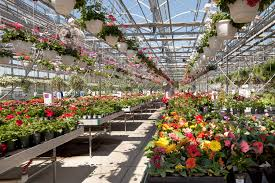

PROYECTOS
Los proyectos en invernaderos abarcan desde la agricultura tradicional (cultivo de hortalizas, flores, plantas medicinales) hasta la innovación tecnológica (automatización con sensores, riego inteligente, control climático, robótica, sistemas de presurización para plagas) y propósitos educativos (enseñanza de biología, ecología, negocios). Se enfocan en la sustentabilidad, el ahorro de agua, la producción ecológica y la optimización de recursos para obtener cosechas de alta calidad, como tomates, pimientos, fresas y más, a menudo usando métodos como el cultivo hidropónico o en sustratos de coco.
Tipos de proyectos
Producción Agrícola: Cultivo de hortalizas (tomates, pimientos, lechugas), frutas (fresas) y plantas ornamentales, utilizando técnicas ecológicas, hidropónicas o convencionales.
Automatización y Tecnología: Control de temperatura, humedad y riego mediante sensores, PLCs (Controladores Lógicos Programables) y software para optimizar condiciones y prevenir enfermedades.
Educación y Comunidad: Invernaderos escolares para enseñar horticultura, ecología, compostaje y emprendimiento, involucrando a estudiantes y la comunidad.
Sistemas Sostenibles: Uso de energía solar, recolección de agua de lluvia y sistemas de presurización para crear ambientes controlados y ecológicos.
Componentes comunes
Estructura: Acero, madera, policarbonato o plástico.
Clima: Sistemas de ventilación, calefacción y sombreado.
Riego: Goteo, aspersión, automatizado con sensores de humedad.
Control: Arduino, PLCs, pantallas HMI para monitoreo y control.
Sustratos: Tierra de hoja, compost, coco.
Energía: Paneles solares.

VOLVER AL MENU